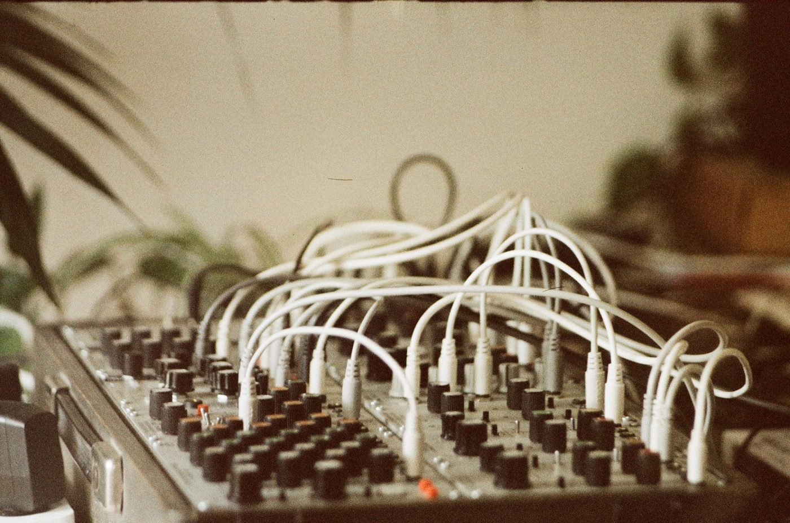
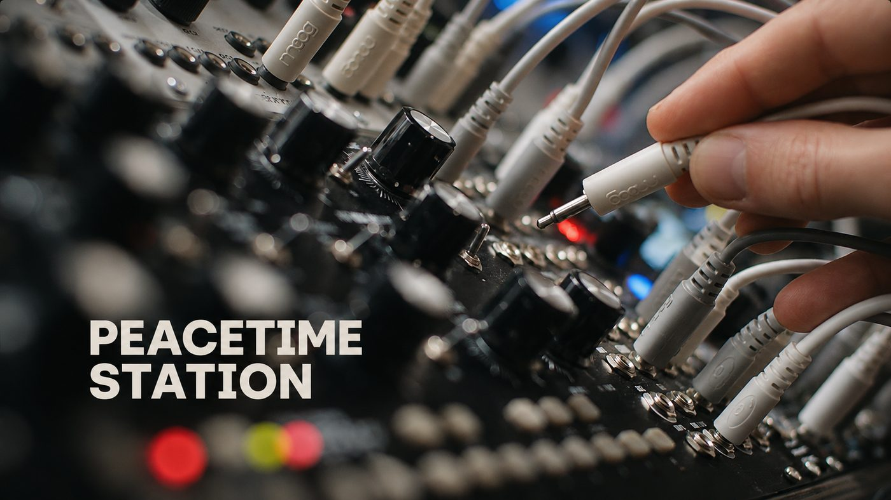

PeaceTime Station
2025–
PeaceTime Station is a series of long live transmissions. There is no schedule. I go on air when I feel it is time and improvise from the first minute. Nothing is recorded in advance. Everything goes straight out.
My instrument is electricity. I play with electric current and shape it through modular synthesis. A microphone stays open while I play, often a radio too. Whatever happens around me can come into the sound or into the picture. Sometimes nothing happens. That is also a result.
Since 2026 the station has been on air around the clock. Between live sets, recordings of earlier transmissions play one after another, in an order I put together by ear.

On air · Watch on YouTube ↗

N71 · Minimal Industrial
December 4, 2025
I pointed the camera at a construction site, listened to the sounds coming from there and improvised. Over half an hour a whole drama unfolded in a single, very slow shot, and I played its soundtrack in real time.

N64 · One Vinyl Turntable DJ Set
October 30, 2025
I have a passion for vinyl and sometimes play records in public. I use a single turntable and improvise, moving from record to record without stopping.

N93 · Artemis II Signal Intercept
April 6, 2026
During the Artemis II mission I connected to NASA's live broadcast and ran the mission's voice communications through my modular synthesizers.